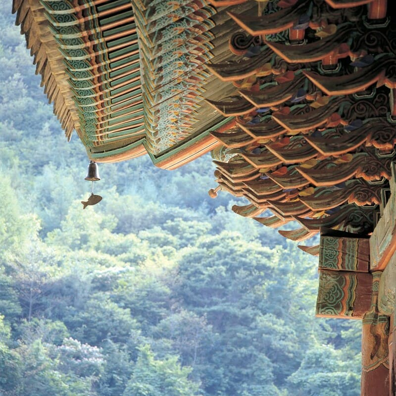
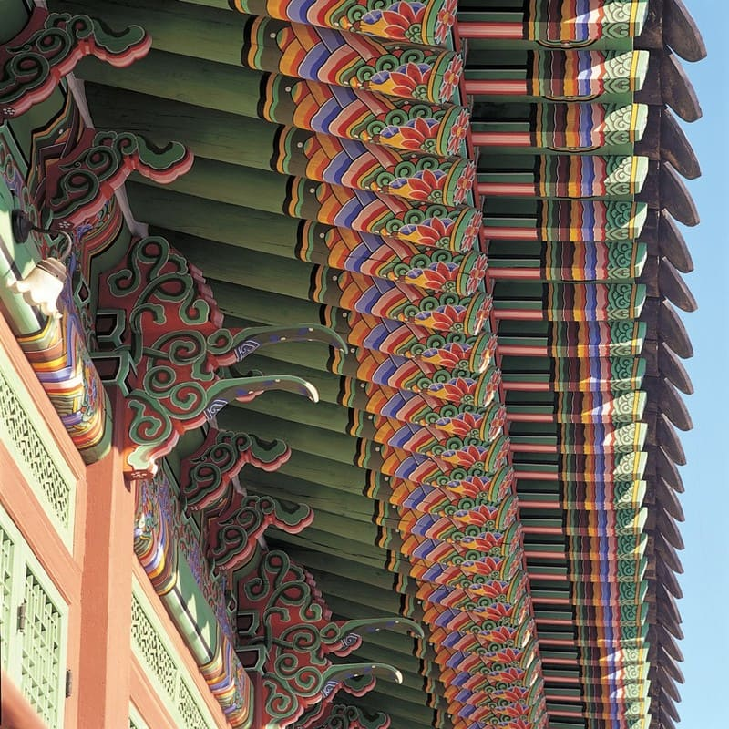
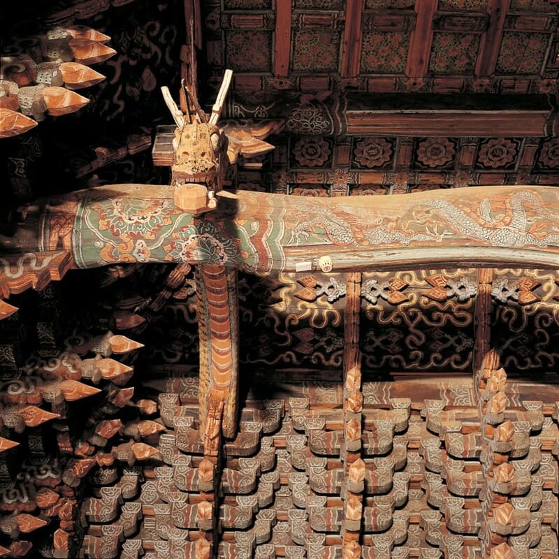
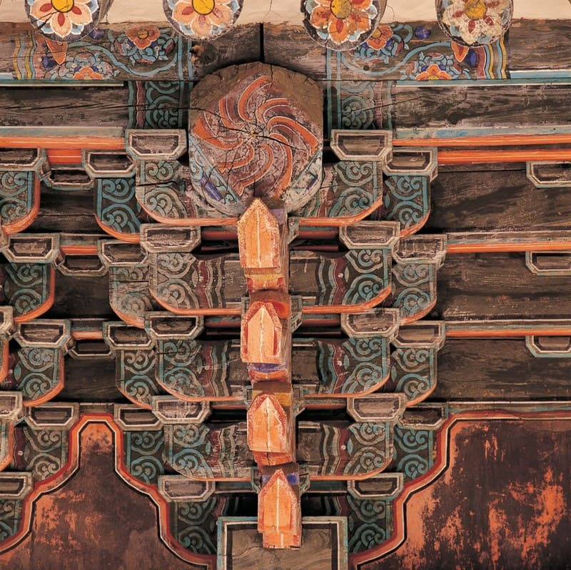

: 붉은 색과 푸른 색의 대비와 조화
절이나 궁의 건물, 또는 누각 등의 벽•기둥•천장 같은 데에 여러 가지 빛깔로 그림과 무늬를 아름답고 장엄하게 그리는 것. 또는, 그 그림이나 무늬
단벽
-한국컨텐츠진흥원-
Dancheong
단청(丹靑) : Contrast and Harmony between red and blue
Drawing pictures and patterns beautifully and magnificently in various colors, such as walls, pillars, and ceilings of temples, palace buildings, or pavilions
or, the drawing or patterns
(=Danbyeog)
-Korea Creative Content Agency, KOCCA-
❮❯


제작 목적
제작 목적: CSS 연습
세부 목적
flex와 grid 이용한 화면생성
선택자 우선순위
라이브러리 사용법
positon-absolute&relative
박스모델 inline, block level, inline-block
Why did I make it?
Purpose: CSS practice
Detailed purposes
Create a layout using flex and grid
The priorities of CSS selectors
How to use a library
Positon-absolute&relative
The boxmodel(inline, block level, inline-block)
안녕하세요. 이 페이지는 CSS연습을 위해 제작했습니다.
flex 속성과 라이브러리를 처음 사용했습니다. 익숙해지니 편하네요.
그동안 애먹었던, position 속성을 드디어! 이해했습니다. 자식 요소에 position:absolute;를 지정하려면, 부모 엘리먼트에도 포지션 속성을 지정해야 한다는 점을 알게 되었습니다.
솔직히 말하자면, 제작기간동안 모니터에 법규를 많이 했습니다. 하지만 언제나 문제는 저였죠.
아참, 저는 한국에서 태어나 지금까지 쭉 한국에서 살고있는 박듀트입니다.
개발공부를 시작한 지 3주 되었습니다.(21XX년 10월 5일 기준)
부족한 부분이 많지만 곧 채워질 예정입니다:)
Hello, this page was created for CSS practice.
I used the flex attributes and library for the first time.
I finally understood the position attributes that I've been having trouble with!
I learned that to specify 'position:absolute' for child elements, I also need to specify position attributes for parent elements.
Oh, I am a Bakdut who was born in South Korea and has lived in South Korea all this time.
It's been three weeks since I started studying.(as of October 5,21XX)
There are many shortcomings, but they will be filled soon:)
❮❯


단청의 의미
예로부터 우리 조상은 ‘백의민족(白衣民族)’이라 불리었다.
백색을 기호했던 특성은 단원 김홍도의 풍속도, 《씨름》에서 도드라진다.
하지만 오방색을 이용한 화려한 색채예술로서 의지적 민족이었음을 상기시킨다.
Meaning of dancheong
From ancient times, our ancestors were called the White People.
The people who favored the white of monotones.
It makes us realize that it was a willful nation that sublimated passionate sensibility as a colorful color art.
단청의 목적
자연에서 쉽게 구할 수 있는 목재
▼
하지만 나무는 쉽게 썩고 갈라짐
▼
건축물의 수명연장이라는 최대의 난관으로 봉착
▼
그 해결점이 바로 단청(칠)
The purpose of dahncheong
Wood is easily available in nature
▼
But trees rot and crack easily
▼
The biggest difficulty of extending the life of buildings is facing
▼
The solution is the dancheong